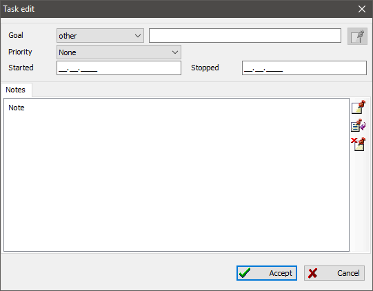

"Task" stores information about an investigation into a person, family, or source. For this purpose, task has a goal, a reference to person or family, task priority, and due date. You can also add text notes to a task to describe the research progress.
You group tasks by search directions using research records.

There is a uniting table on the "Tasks" tab of the main working window, which includes all tasks available in the database. A task summary to the right of the table displays all information about the selected task and list of research records that link to the selected task.